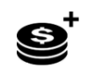

Bem-vindo ao Vídeo Slot SORTE DE RÁ, com tema da antiga civilização do Egito. O jogo apresenta diferentes modos de jogo, sincronização de tambores, giros grátis, aposta e muitos outros recursos interessantes.
SOBRE O JOGO
SORTE DE RÁ é jogado com 10 linhas de pagamento fixas. O jogo conta com dez símbolos regulares que pagam se três ou mais forem alinhados nos tambores adjacentes, a partir da posição mais à esquerda em uma linha de pagamento.
MODOS DE JOGO : O jogador pode escolher jogar os modos de jogo padrão, super ou mega.
Modo de jogo padrão: usa o botão de giro padrão. Escolha este modo para jogar o jogo normal.
Modo de jogo super: usa o botão de giro avançado. Escolha este modo para girar a seta e habilitar a sincronização de tambores com cada giro. Se a seta parar na zona verde, os tambores serão girados com os megassímbolos ativados. Se a seta parar na zona vermelha, você perde a aposta.
Modo de jogo mega: usa o botão de giro avançado. Escolha este modo para girar a seta e entrar nos giros grátis diretamente. Se a seta parar na zona verde, os tambores giram com o símbolo mega scatter totalmente em vista, oferecendo acesso direto aos giros grátis. Se a seta parar na zona vermelha, você perde a aposta.
GIROS GRÁTIS
O símbolo do pergaminho totalmente em vista aciona 8 giros grátis. Antes do bônus de giros grátis, 2 símbolos diferentes são escolhidos para serem usados no jogo de giros grátis. Os símbolos escolhidos agem como símbolos especiais de expansão. Se os símbolos especiais estiverem presentes em 2 ou 3 ou mais tambores, após os ganhos por combinações premiadas regulares terem sido acionados, os símbolos especiais expandem para cobrir todas as posições verticais nos tambores em que estiverem presentes. O símbolo pagador inferior será acionado primeiro, e, uma vez pago, será acionado o símbolo pagador superior. Durante os giros grátis, os tambores sincronizados serão acionados em cada giro, potencialmente aumentando os símbolos especiais em expansão. Durante os giros grátis, outros giros grátis podem ser concedidos se o scatter de 3x3 parar totalmente em vista. 8 giros grátis adicionais serão concedidos com os mesmos símbolos em expansão.
COMPRA DE BÔNUS
O recurso pode ser comprado pelo preço mostrado no medidor 'compra de bônus'. Se o saldo disponível for igual ao preço da compra de bônus, então o saldo será reduzido a zero, acionando o recurso automaticamente.
APOSTA
O jogo apresenta uma rodada de aposta opcional que permite ao jogador multiplicar o prêmio total no jogo principal, somente se adivinhar corretamente a cor ou o naipe de uma carta escondida. A cor correta paga 2x e o naipe correto paga 4x. A rodada de aposta pode ser jogada até 5 vezes seguidas ou até um limite máximo de € 250.000 ou o equivalente em outra moeda
JAK GRAĆ
-
Wybierz wartość stawki/bilonu.
-
Kliknij (dla pulpitów) lub dotknij (dla urządzen mobilnych) przycisk rundy, aby rozpocząć cykl gry.
PRZYCISKI GRY
|
Ikona |
Pulpit |
Mobilny |
Działanie |
|
|
Działanie | Działanie | Rozpoczyna pojedynczy cykl |
| Maks. Zakład | (zawarty na ekranie wyboru stawki w ustawieniach menu) | Ustawia konfigurację zakładu na maksymalny poziom stawki. Przycisk rundy przyciśnięty, by rozpocząć. | |
|
|
Gra automatyczna | Przytrzymaj Rundę, by włączyć autogrę (lub zawarty w menu ustawień) | Pojawia się ekran menu, pokazujący opcje autogry, dostępne w grze, by równocześnie rozpocząć wielokrotne cykle. |
|  | Wybór stawki | Wybór stawki (lub zawarty w ustawieniach menu) | Pojawiają się opcje stawki, gracz wybiera poziom zakładu. |
|
|
Menu ustawień | Menu ustawień | Otwiera się oddzielny ekran ustawień, oferujący poniższe: Dom; Audio; Ustawienia gry; Historia; Info/Pomoc i Postaw zakład (tam, gdzie jest to wymagane) |
|
|
Audio | (Główny obszar ustawień dostępny w menu ustawień) | Pulpit - otwiera menu ustawień audio, dostępne dla gracza, by niezależnie włączyć lub wyłączyć muzykę lub efekty. |
|
|
Turbo gra | (dostępny w menu ustawień gry) | Rozpoczyna zmianę w prędkości bębnów do szybkich obrotów |

|
ZAKLAD | ZAKLAD | Rozpoczyna funkcję obstawiania po wygranej w grze bazowej. |
|
|
ODBIERZ | ODBIERZ | Odbierz wygraną i pomiń obstawianie. |
 |
MODOS DE JOGO | MODOS DE JOGO | Selecione o modo de jogo com o qual o jogador deseja apostar. |
PRZYCISKI USTAWIEŃ
| Symbol | Ikona | Zachowanie |
| Historia gry |
|
Pokazuje graczowi listę cykli gry, jaką grał w danej sesji. |
| Ustawienia zakładu |
|
Tutaj gracz może określić wartość stawki w grze lub wybrać inną z dostępnych opcji. |
| Autogra |
|
Otwiera stronę, z jakiej można wybrać i zainicjować różne standardy i rozszerzone opcje autogry, w tym limit strat (tam, gdzie jest to właściwe) |
| Ustawienia gry |
|
Pokazuje dostępne różne ogólne opcje ustawień (np. ustawienia audio, wybierane przez gracza, by mógł określić jakie dźwięki chce słyszeć w czasie sesji) |
| Dom |
|
Zamyka bierzącą sesję gry (po końcowej podpowiedzi) i ekran wraca do stron menu operacyjnego głównej gry. |
INNE INFORMACJE O GRZE
-
Jednoczesne wygrane z różnych linii dodawane są do siebie i wypłacane graczowi.
-
Wartość bilonu - Pokazuje teoretyczną nagrodę stawki obecnego ustawienia. Wszystkie wygrane są pokazane w bilonie, który pownien być pomnożony przez wartość bilonu, aby przeliczyć w wygraną nagodę gotówkową. Gotówka/Bilon - Pokazuje stan Twojego konta jako gotówkę (wartość pieniążną) lub bilon (liczba kredytów), w zależności od tego, co wybrał gracz. Domyślny ekran to gotówka. Zamiana gotówki na żetony i odwrotnie jest dokonywana z 2 wartościami dzesiętnymi, by być jak najbliżej oryginalnej wartości, jednakże w grze zamiana żetonów zawsze będzie pokazywana bez wartości dziesiętnych.
-
Zakład - Pokazuje wartość zakładu obecnego ustawienia. Rozmiar zakładu to 1 bilon pomnożony przez mnożnik zakładu.
-
A APOSTA TOTAL É O VALOR DA MOEDA MULTIPLICADO PELO MULTIPLICADOR DA APOSTA, QUE SÃO 40 MOEDAS.
-
Maksymalny zakład (TYLKO dla pulpitu) - Ustawia wartość bilonu na największą możliwą.
-
Przycisk rundy - Rozpoczyna grę. Kiedy bębny się kręcą, przycisk rundy przekształca się w przycisk turbo stop. Naciśnij przycisk turbo stop, żeby natychmiast zatrzymać bębny.
-
Autogra - Możesz ustawić grę, by toczyła się bez konieczności naciskania za każdym razem przycisku rundy. Wybierz liczbę rund w autogrze, przyciskając przycisk autogry (lub przytrzymując przycisk rundy, by otworzyć menu autogry (dla urządzen mobilnych)). Tam, gdzie ma to zastosowanie możesz wybrać dodatkowe warunki kiedy zatrzymać autogrę w ustawieniach gry. Limit straty w niektórych wersjach gry zapobiega stracie gracza ponad limit, ustawiony w czasie sesji autogry. Aby zatrzymać autogrę manualnie, naciśnij przycisk stop autogra.
-
Wygrana - Pokazuje wygraną dla bieżącej lub ostatniej wypłaconej wygranej.
-
Gotówka/Bilon - Pokazuje stan Twojego konta jako gotówkę (wartość pieniążną) lub bilon (liczba kredytów), w zależności od tego, co wybrał gracz. Domyślny ekran to gotówka.
-
Zamiana gotówki na żetony i odwrotnie jest dokonywana z 2 wartościami dzesiętnymi, by być jak najbliżej oryginalnej wartości, jednakże w grze zamiana żetonów zawsze będzie pokazywana bez wartości dziesiętnych.
ZWROT DLA GRACZA
-
Całkowity teoretyczny zwrot dla gracza wynosi 96,01%
DODATKOWE INFORMACJE
-
Wszystkie wygrywające kombinacje rozliczane są od lewej strony do prawej, zaczynając od pierwszego bębna po lewej stronie. Wyjątek stanowią wygrane za symbole scatter, które nie muszą tworzyć układu.
-
Wygrane osiągnięte z cechami są płatne dodatkowo do różnych kombinacji.
-
W przypadku uszkodzenia sprzętu/oprogramowania gry, wszystkie dotknięte tym zakłady i wypłaty są unieważnione, a zakłady zwrócone.
-
Maksymalna wygrana w grze wynosi równoważny 250000 euro.